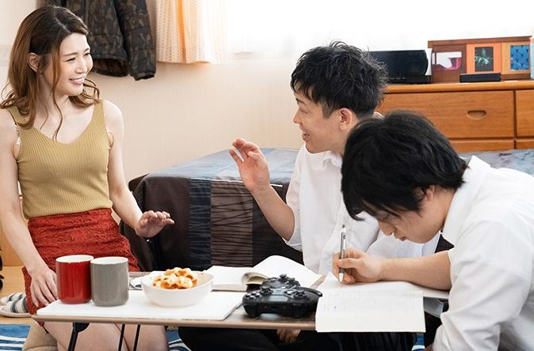

Chương 1
Nhà tôi ở trong 1 cái chợ nhỏ, tôi và mẹ tôi sống chung với nhau. Năm nay tôi vào lớp 9 trường tôi cách nhà tôi tầm 10km. Mẹ tôi bán tạp hóa.
Nhiều năm dành dụm. Nhà tôi đã rộng hơn 1 tí. Nhưng do để đồ bán nên là tôi và mẹ ngủ chung 1 phòng từ khi bố tôi bỏ mẹ con tôi đi theo người đàn bà khác. Mà người đàn bà đó cũng chính là bạn thân của mẹ tôi. Cô Hoa.
Mẹ tôi năm nay 35 tuổi..
Nhưng ở chợ nên mẹ tôi càng trẻ ra. Da mẹ trắng. Cao ráo. Mẹ tôi đeo trang sức. Đeo vòng cổ chân nhìn rất đẹp.
Do mẹ tôi lo buôn bán lo nhà lo cửa, còn ba tôi thì thích bày bạc nên hai người ngày càng xa nhau.
Mẹ tôi ăn nói nhẹ nhàng, chậm rãi, kỹ tính, nhưng cũng đanh đá. Khó có thể diễn tả được tâm tính mẹ tôi khi bạn chưa tiếp xúc.
Mỗi khi đi học về. Tôi thường phụ mẹ tôi dọn đồ sau đó học bài. Đêm đến tôi hay đi bộ ngoài chợ rồi về phòng vào ngủ với mẹ.
Ở chợ đã ồn ào lại còn hẹp nữa. Mẹ nói với tôi con trai lớn mà ngủ với mẹ là không nên. Tôi cứ hỏi mẹ hoài. Mẹ e thẹn nhìn tôi.
Con đã vào lớp 9. cũng sắp dậy thì, tánh đàn ông đã nổi lên. Không thể ngủ với mẹ hoài được.

Tôi cũng đủ nhận thức hiểu được điều đó. Vì tôi đã học sinh học. Biết khi dậy thì rồi con ngta thay đổi như thế nào.
Con cu tôi đã mọc lông, nách tôi cũng vậy. Hai trứng dái tôi cũng bắt đầu bự ra. Nọc tôi cũng nhiều. Nhưng tôi thương mẹ tôi. Tôi quen hơi ấm của mẹ tôi rồi. Tôi không muốn ngủ 1 mình. Có vui gì đâu? Có mẹ con hủ hỉ.
Nhớ hồi còn nhỏ. Tối ngủ tôi thường để chân lên mẹ tôi nó đã và mềm vô cùng.
Thế mà bây giờ mỗi lần ngủ mẹ đụng mẹ tôi mẹ tôi hô nhột. Coi bực ghê hôn
Thấy vậy nhưng mỗi khi bán mệt. Tôi cũng thường ôm mẹ ngủ.
Mẹ tôi phải nói là điện nước đầy đủ. Nàng nằm nghiêng để lộ cặp bưởi tròn và trắng. Tuy cố gắng tránh né nhưng ko thể nào không để ý là mẹ tôi quá đẹp.
Đó là dạo gần đây tôi thấy quy đầu tôi hay tiết ra nước nhờn. Một thứ chất nhờn trong mỗi khi nghĩ đến chuyện giới tính. Nhưng nhà có hai mẹ con. Mẹ cứ vờn bên tôi. Hỏi sao ko để ý.
Tôi cũng không biết nước nhờn đó tiết ra là do mẹ tôi hay lý do khác. Nhưng mẹ con ruột làm sao có chuyện suy nghĩ đó được.
Tôi đang suy nghĩ vẩn vơ thì mẹ tôi trong nhà tắm vọng ra.
Con trai…lấy cho mẹ cái khăn trong phòng. Mẹ gấp quá quên rồi.
Dạ.
Tôi nhanh nhảo đáp rồi vào lấy cho mẹ cái khăn cho mẹ lau. Trời cũng đã sập tối. Cái nhà tắm nhỏ xíu mà hai mẹ con tôi sinh hoạt. Nó bé mà rất gọn gàng.
Tôi không mở cửa. Mẹ tôi thò tay ra lấy.
Tay mẹ tôi đeo vàng, vừa dài vừa trắng.
Cám ơn con trai.
Vì là mẹ con nên cửa nhà tắm bằng kính hoa như mấy cái nhà tường có cửa sổ á các bạn. Thấy được cái bóng nhưng không thấy rõ.
Nhìn một hồi cũng đủ biết thân hình mẹ tôi ngọt nước đến cỡ nào. Dáng mẹ khum khum. Rồi xả vòi nước.
Tới đây tự nhiên đủng quần tôi nhô ra. Tôi hoàn toàn không thể kiểm soát được con cu tôi đang cương cứng vì mẹ ruột của tôi. Rồi cảm giác đê mê lạ lắm. Cảm giác đó khác xa so với trai gái. Cảm giác khó tả. Thích thú tò mò và khát khao.
Nhưng đó là mẹ tôi. Và tôi cũng là người học trò hiếu hạnh nên ko thể bị phân tâm. Tôi bỏ đi vô phòng. Rồi dưới cu tôi quện một dòng nước. Nó ra ướt quần tôi. Tôi lo lắng. Nước nhời rỉ ở đầu cu. Ra nhiều. Tôi muốn hỏi nhưng khó cái mẹ tôi là phụ nữ. Cũng rất ngại các bạn. .
Tôi tuột quần ra. Rồi lấy tay mơn trớn đầu cu. Sao càng làm tôi càng thấy sướng khoái. Cu tôi nở rộng ra. Gân guốc lên. Đúng lúc mẹ tôi mở cửa phòng.
– mẹ nè..ra ăn cơm mẹ hâm rồi nè…
Tôi đáp vội đáp vàng…dạ.
Rồi cùng mẹ ra ăn cơm.
Tối nay hai con dọn đồ sớm. Nên cũng rảnh. Mẹ tôi nay diện bộ áo thun trễ ngực. Chắc nhà hẹp quá nên mẹ tôi mặc cho mát. Hai trái bưởi mỗi lần khom xuống nó lộ cả khe ngực. Bên trên là sợi dây chuyền vàng điểm tô cho làn da trắng.
Hỏi sao mấy cô hàng xóm hay ghen vì những ông chú cứ hay ngó qua nói chuyện mẹ tôi. Tiệm sát tiệm nhưng tôi biết họ muốn tiếp cận mẹ tôi để được nhắm nhìn cái thân thể gái một con mộng nước này.
Rồi tối đến..tôi thì vào bàn học. Mẹ tôi thì trên giường tha kem trộn. Mẹ tôi mặc cái quần đùi màu hồng. Đùi mẹ trắng dài thấy cả chỉ máu. Cũng như những ngày bên mẹ tôi cũng miệt mài học đó. Hồi đó lúc tôi còn nhỏ. Bây giờ
Khác cái là con cu tôi nó cứ cương cứng quài.. tôi đừng dậy quay qua mẹ tôi một cách vô tư.
Mẹ tôi thấy được. Nàng hơi sắc mặt rồi bảo.
Trời ơi con trai mẹ. Xấu hổ chưa kìa…dạo này thấy lớn lắm rồi đó.
Tôi cũng muốn cho mẹ tôi biết tôi không còn nhỏ nữa. Con cu tôi chỉa ra trước mặt mẹ tôi. Rồi tôi lại ngồi chung với mẹ.
Mẹ này…con nói cái này mẹ đừng rầy con nhé.
Nói đi…mẹ đó giờ có la con gì đâu?!
Mẹ!
Dạo này sao con có cái gì lạ lạ. Mỗi lần gặp đàn bà con gái thì cu con lại cứng lên rồi lại chảy nước nữa.
Mẹ tôi cười nhẹ! răng mẹ trắng như tuyết. Mặt mẹ tôi ngời ngời vẻ quý phái. Nàng nhìn tôi.
Thì con trai lớn ai mà không vậy! Con không học sinh học sao?
Tôi:
Dạ con có hoc mẹ ạ. Mà sao con thấy kì kì. Me thấy con thấy mẹ mặc đồ khêu gợi con cũng khó chịu.
Mẹ tôi lại cười lớn hơn.
Cái thằng này…mẹ là mẹ của con..chứ có phải con gái đâu mà lm con khó chịu. Đâu quay sang cho mẹ coi cậu nhỏ.
Tôi biết mẹ cũng biết rồi. Tôi quay sang cho mẹ nhìn kỹ hơn.
Cu tôi lúc này đã cứng hơn. Chỉa lên rồi nở ra.
Nè mẹ. Tại mẹ hết.
Mẹ:
Con trai mẹ lớn thiệt rồi. Con dậy thì rồi. Nhưng mà với mẹ thì ko dc hổn. Mẹ đẹp nhưng là mẹ của con. Nếu mà tầm bậy mẹ cho con ngủ riêng.
Tôi: ai kêu mẹ đẹp quá chi.
Mẹ coi mẹ kìa. Da mẹ trắng. Đùi mẹ to..mà còn…
Mẹ: mà còn gì nữa…
Tôi thì thầm: ngực mẹ cũng to nữa.
Mẹ tôi kí đầu tôi.
Thui ngủ đi ông tướng.
Có ai sinh con ra rồi con dê lại mẹ chứ.
Tôi cười khì khì.
Mẹ tôi nói tiếp.
Nói chứ mai mẹ đi mua cho con mấy quần sì để bao của con lại. Để ko thui ngta cười cho.
Tôi: trời z con cũng phải mặc quần sì nữa hả mẹ? Con thấy nực lắm.
Mẹ : lớn ai cũng phải bận hết con trai.
Tôi: thế mẹ con bận không. Rồi tôi nhìn vào đùi mẹ.
Mẹ: sao không! Ai trưởng thành cũng bận quần sì! Nam gọi là quần sì. Nữ gọi là quần lót áo lót.
Tôi cố thắc mắc:
Vậy con gái bận chi mẹ. Của con gái đâu có chỉa ra đâu mà bận.
Mẹ tôi vừa tha kem xuống đầu gối nhìn tôi lườm.
Con học sinh học con trả thầy hết r à..
Tôi: con quên hết rồi mẹ nhắc lại đi.
Mẹ: ờ…ờ..ờ..thì con gái lớn ngực to ra. Mông to ra. Bộ phận sinh dục cũng bự ra.
Tôi: bộ phận sinh dục nữ người ta gọi là gì mẹ.
Mẹ hấy tôi: mấy cái tục tỉu mẹ ko có nói đâu.
Tôi: dạ. Vậy mẹ cũng bận vậy chắc của mẹ cũng bự lắm đúng ko.
Mẹ kí đầu tôi.
Thui đi ngủ đi đừng có thắc mắc tào lao. Có tin tôi cho ra ngoài nhà trên ngủ không? R mẹ dò đầu tôi. Ôm tôi vào lòng.
Hai mẹ con ngủ hồi nào ko hay…